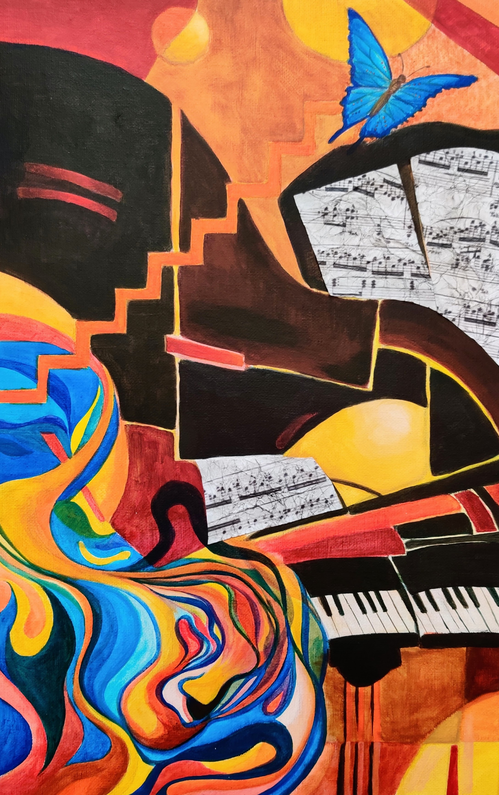
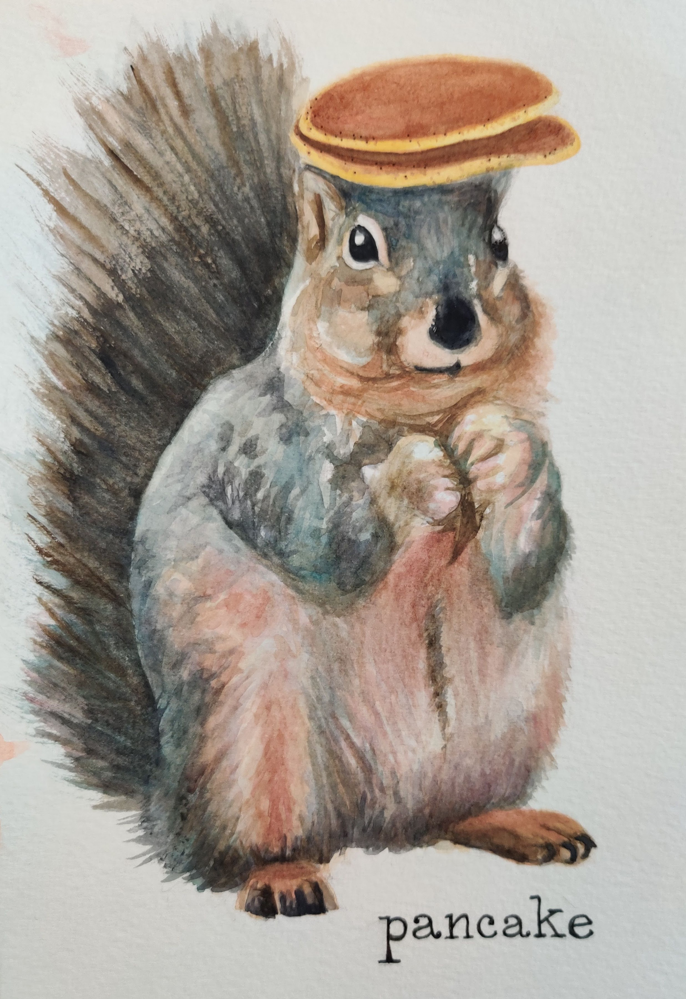
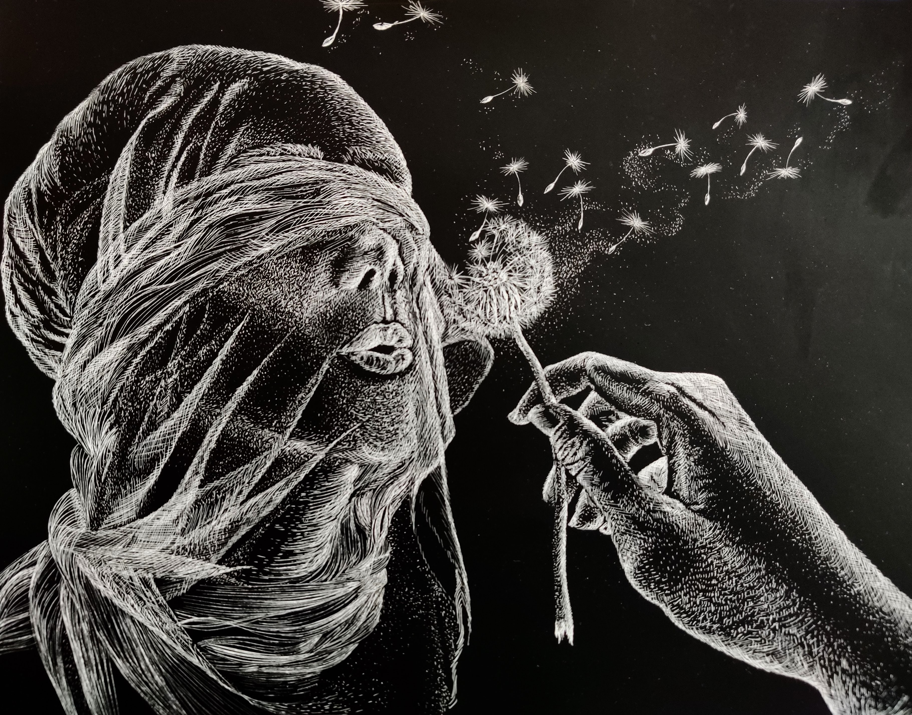
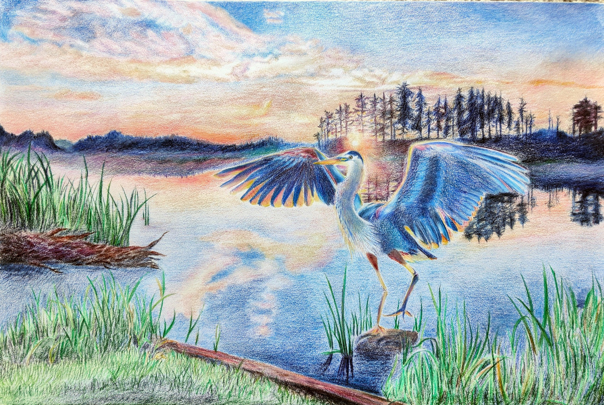

Art Gallery
Check out my art :3
Paintings:

"Shapes of Sound", 8'' x 16'' on canvas'

"Pancake", Watercolor on 6'' x 10'' cold-press
Drawings:

"Hidden Dreams, Scratch ink on 8'' x 11''

"Flight at Dawn", Colored pencil on 12'' x 18'',
 "Fabric Study", Charcoal on 5'' x 8'' toned paper
"Fabric Study", Charcoal on 5'' x 8'' toned paper